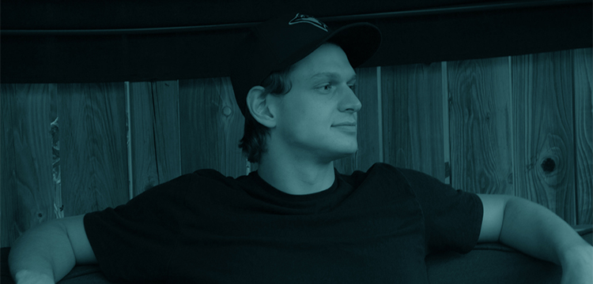
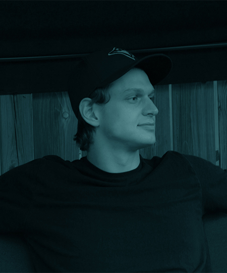
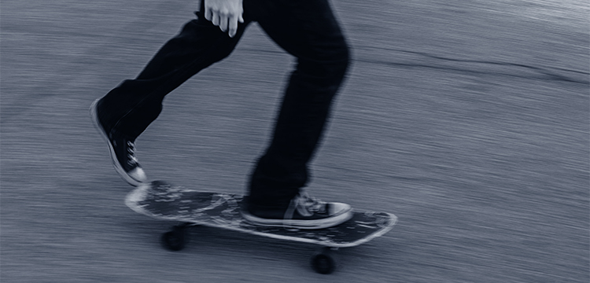

About Me
About Me
 Hi, my name is Mitchell Derry, I'm a 19 years old student who is currently studying at Algonquin College; I have always been a creative person with an interest in visual arts, which led me to the program I'm currently enrolled in. I consider myself to be a multimedia developer, specializing in graphic design, web design and camera work, alongside general skills such as professional communication, a knowledge of good design practices. I hope to one day have a skillset developed enough to help me pursue freelance design-work.


Education
I graduated from high school in 2019, opting to take a year off before pursuing post-secondary school. I was originally enrolled in the computer systems engineering program at Carleton University, but due to difficult circumstances due to the pandemic, I wasn't enjoying the program and in turn I wasn’t successful. Moving forward I decided to enroll in the Interactive media design program at Algonquin college, as I wanted to pursue something with more of a creative outlet. Fast forward to today, where I'm loving the program!
Learn MoreHobbies
I have many interests aside from visual design and coding. I’m a huge music fan; I listen to everything ranging from 70’s progressive rock to Modern RnB, hip hop and space rock. I have an ever growing vinyl collection, including records from Led Zeppelin and Pink Floyd; two of my favourites. I have been playing guitar for nearly 6 years and would eventually like to try and produce my own music. Along with music I also am a very avid skateboarder, which I have just gotten back into within the last year.